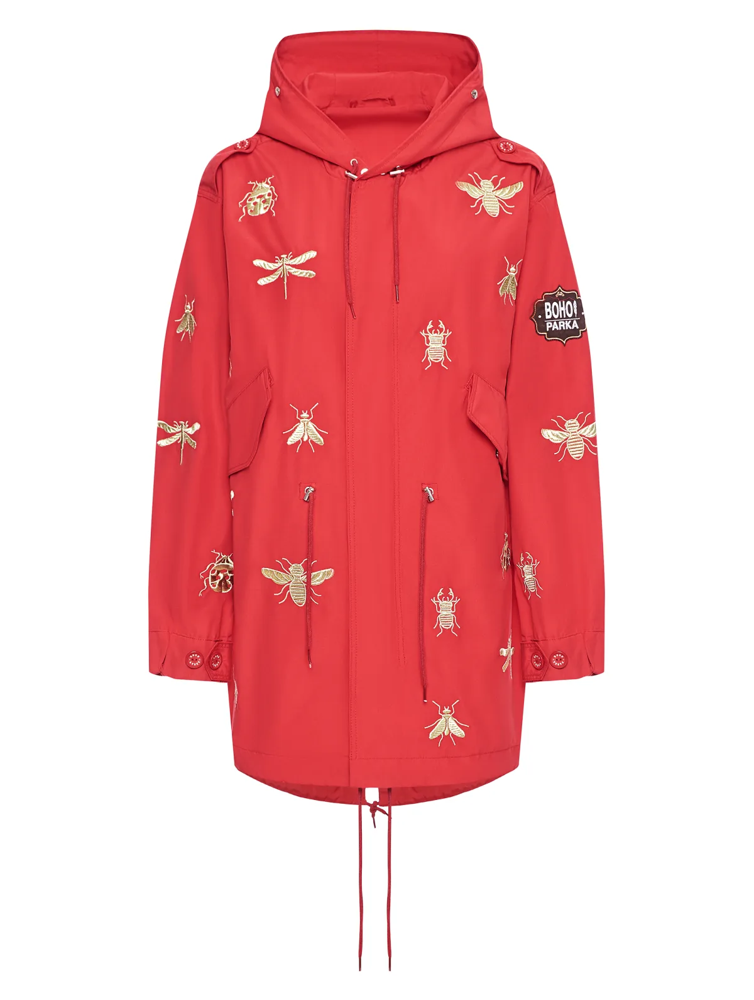
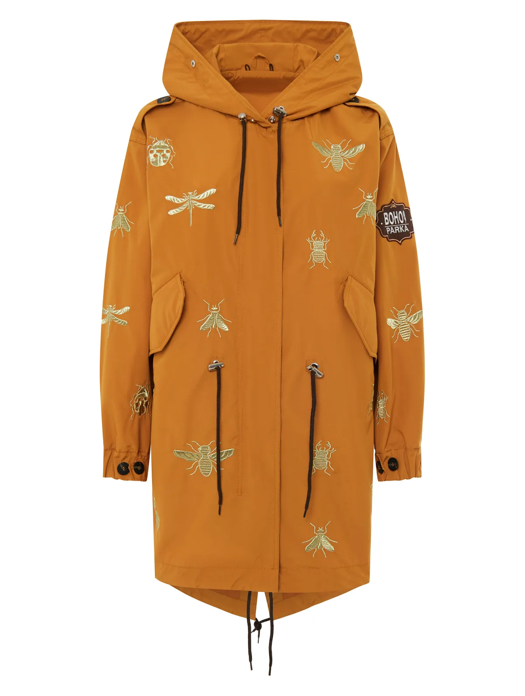
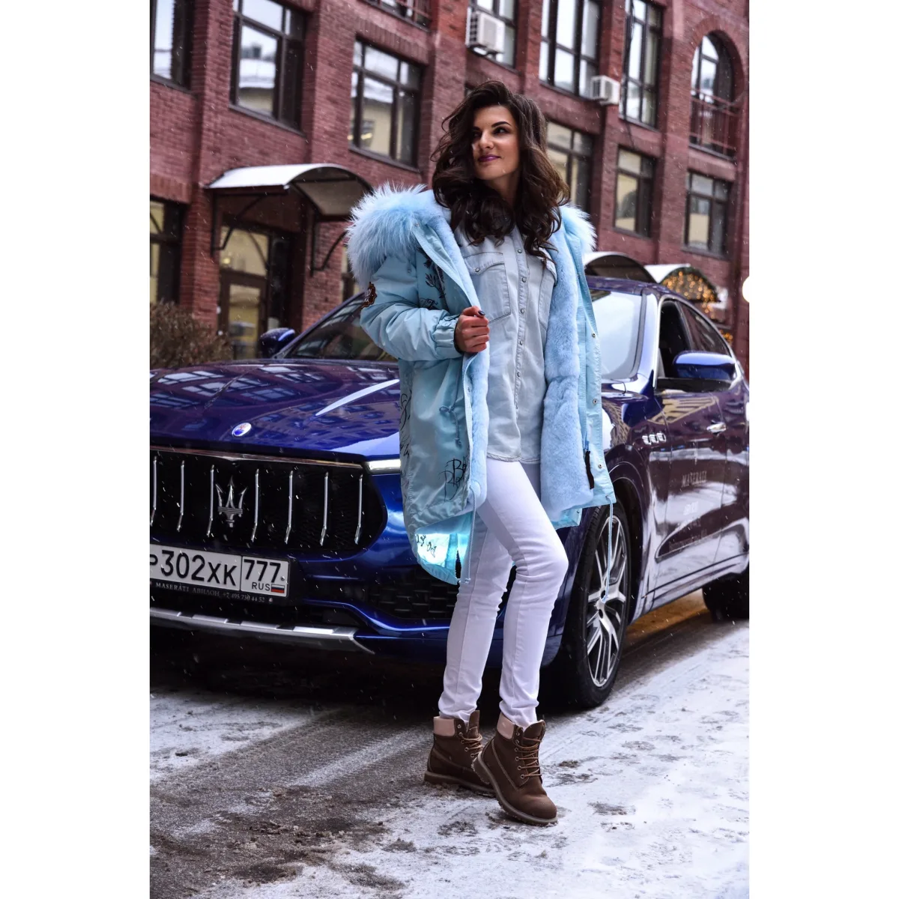
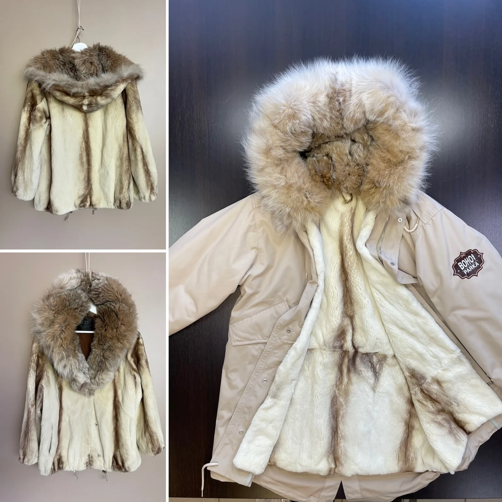
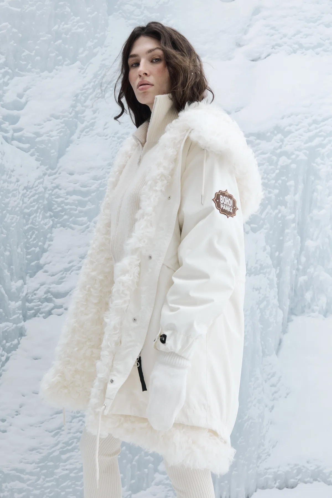
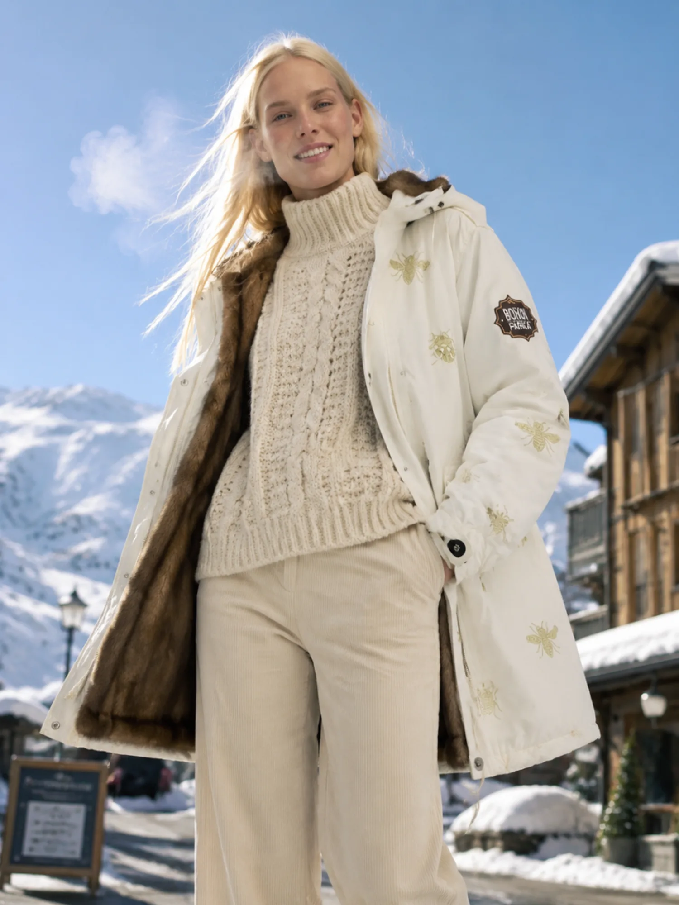

Верхняя парка
Ветро- и влагозащитная ткань. Самостоятельная куртка для межсезонья.

Не выбирать между красотой и теплом. Получить и то, и другое.
Парка становится личной: длина, цвет, мех, вышивка и посадка складываются в вещь, которой больше ни у кого нет.

Ветро- и влагозащитная ткань. Самостоятельная куртка для межсезонья.
Съёмная внутренняя часть: «Еврозима» до −10° или «Суперзима» до −40°.
Закрывает лицо от ветра и меняет характер образа одним движением.
Вы выбираете характер будущей парки, а мастерская собирает его в точную конструкцию.
Короткая, базовая или удлинённая.
Более двадцати оттенков и авторские принты.
Из коллекции мастерской или из вашей шубки.
Вышивка, фурнитура и точная посадка.






Свободный крой не стесняет движение, съёмные детали подстраиваются под погоду, а тепло остаётся внутри.
Разберём старое меховое изделие, оценим материал и превратим его в съёмную подстёжку, опушку или цельный новый образ.



«Я мечтала создать совершенную куртку — тёплую, красивую и по-настоящему вашу».
Наталья много лет работала художником-декоратором, изучала дизайн одежды и швейное дело. В 2015 году открыла мастерскую парок на меховой подкладке. Сегодня BOHO! PARKA носят от Камчатки до Италии.

Расскажите Наталье о своём климате, любимой длине и мехе. Разговор — первый шаг к вашей BOHO! PARKA.
Написать в Telegram